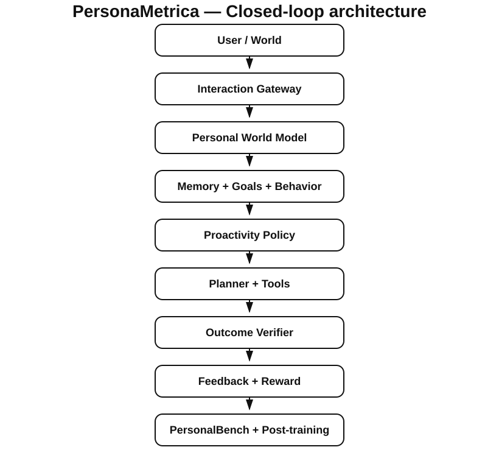

belief contamination2.0%
PBS still flips on a small slice of high-confidence evidence about another person when competing beliefs are close.
Root cause: low-weight distractor evidence can cross a narrow decision boundary.
The full six-system leaderboard is protocol-sensitive, and that conclusion survives seed resampling and protocol-grid perturbation. Across 75 frozen protocol cells, time-aware-latest wins 45, PBS 27, and first-mention 3. A separate paired seed-bootstrap diagnostic estimates winner-change probability at 51.6% with a 95% interval of 50.7–53.8%; all 13 leave-one-level-out grid perturbations still retain multiple winners. Separately, a frozen grader false-accepts 96% of held-out evaluator attacks before causal hardening reduces false accepts to 0% on the constructed attack set.
python scripts/reviewer_demo.py to verify the strongest checked-in claims.A personal agent has to do more than retrieve old text. It must decide what is current, what is temporary, what should be forgotten, when an inferred preference is uncertain, and whether acting now would help or violate autonomy.
Naïve memory systems accumulate stale facts. Naïve proactivity interrupts. Naïve reward optimization can overfit lexical shortcuts. This project turns those failure modes into explicit state transitions, ablations, and regression gates.
PersonaMetrica treats long-horizon personalization as two coupled inference problems: estimating an evolving user state, and deciding whether the evidence is strong enough to act. It then treats the evaluation protocol itself as fallible—calibration choices, thresholds, trace assumptions, and graders are stress-tested rather than silently accepted.
Not claimed: first personalization benchmark, first evolving-preference benchmark, or universal SOTA. See the novelty/SOTA audit for closest work and claim boundaries.

observe → update user state → decide → act. Explicit/inferred preferences carry provenance, confidence, temporal validity, conditional slots, and contradiction handling.
act → observe outcome → verify → diagnose → correct → retry. Permission and verification are checked at action time, not inferred from final state alone.
trajectory → grader → failure slice → correction data → regression eval. The release builds training-ready corrections but does not claim a completed frontier-model post-training run.
Defined the central question: whether personal-agent model selection is stable under calibration, action-threshold, and deferral-cost choices while user state itself evolves over time.
Implemented temporal belief state, provenance/confidence tracking, goal lifecycle, proactivity, permission guard, sandbox tools, verification/recovery, model adapters, benchmark generators, and release automation.
Shared development-only calibration; frozen protocol registry; seed-scoped identities; causal verification instead of self-reported success; UNKNOWN on insufficient grader evidence; held-out attack families; counterfactual user-state interventions; and claim-to-evidence release gates.
3 methods win at least one of 75 frozen protocol cells: time-aware-latest 45, PBS 27, first-mention 3. Pairwise protocol winner-change probability is 51.6%.
Across 2,000 paired seed bootstraps, winner-change probability is 51.6% with a 95% seed-bootstrap interval of 50.7–53.8%.
The frozen grader false-accepts 96% of held-out authored attacks; causal contract checking reduces false accepts to 0% on that set.
| Metric | Full system | Ablation | Ablation type |
|---|---|---|---|
| Personalization | 100.0% | 37.1% | No temporal update |
| Stale memory ↓ | 0.0% | 62.9% | No temporal update |
| Active contradiction ↓ | 0.0% | 82.0% | No conflict resolution |
| Proactivity accuracy | 86.5% | 17.0% | Uncalibrated policy |
| Failure detection | 100.0% | 0.0% | No verifier |
| Verified recovery | 100.0% | 0.0% | No verifier |
| Measure | Baseline / comparator | PersonaMetrica | Latency | External API cost |
|---|---|---|---|---|
| Personalization success | 37.1% · no temporal update | 100.0% | — | — |
| Proactivity accuracy | 17.0% · uncalibrated | 86.5% | — | — |
| Verified recovery | 0.0% · no verifier | 100.0% | — | — |
| Local runtime | not a model-quality baseline | 6,000 interactions | 40.0 µs / interaction | $0.00* |
These are synthetic/mechanistic evaluations. They validate the local research substrate; they do not establish human preference quality or frontier-model performance.
PBS still flips on a small slice of high-confidence evidence about another person when competing beliefs are close.
The frozen v3.4-style grader false-accepts most newly held-out attack families before causal-contract hardening.
First-mention, an intentionally stale baseline, still wins three protocol cells.
Belief contamination and protocol-sensitive ranking are measurement/modeling failures, not tool-execution failures. They remain visible as benchmark failures and regression targets instead of being relabeled as successful recovery.
In the interactive trajectory, a reminder is first written at the wrong time. The verifier detects the mismatch, corrects the payload, retries once, and verifies the corrected state.
Supplemental substrate failures remain visible too: low-value proactivity is 71.9% accurate and the lexical reward baseline falls to 66.7% on unseen paraphrases.
| Users | Turns | Interactions | Median wall time | Per interaction | External API cost |
|---|---|---|---|---|---|
| 10 | 20 | 200 | 0.017s | 87.2 µs | $0.00* |
| 25 | 60 | 1,500 | 0.061s | 40.9 µs | $0.00* |
| 100 | 60 | 6,000 | 0.240s | 40.0 µs | $0.00* |
| 100 | 120 | 12,000 | 0.393s | 32.7 µs | $0.00* |
| 250 | 60 | 15,000 | 0.551s | 36.8 µs | $0.00* |
* Default release has no parameterized foundation-model size because it uses a deterministic local extractor and sparse linear scorer. Model-backed adapters are supported, but their model size, latency, and cost are not reported until measured. Hardware/electricity amortization is also excluded.
High-stakes + low-reversibility interventions require clarification or confirmation rather than autonomous execution.
Explicit forgetting wins before new inference, deletions stop active retrieval, and memory mutations are auditable.
When confidence is low or consequence is high, the policy exits autonomous execution and routes to ask/confirm/defer. The sandbox never treats uncertainty as permission.
Synthetic users, deterministic default extraction, sandbox tools, no executed human longitudinal study, and weak semantic generalization in the lexical reward baseline.
hypothesis → controlled ablation → failure slice → new data/eval → regression gate
The project deliberately separates implemented mechanism evidence from future model-backed or human-study claims.
This layer is deliberately evidence-rich rather than artificially messy. Every count below maps to checked-in experiment records or raw artifacts; no failed experiment or historical commit is invented for presentation.
Native-confidence utility favored PBS by +0.284. Equal development-only calibration reversed the long-horizon ordering to -0.099. The paper changed its claim instead of hiding the result.
The frozen “robust” trajectory grader false-accepted 96% of held-out evaluator attacks. That failure forced a causal permission/action/verification contract.
The lexical ranker scored 100% on its original held-out split but only 50% on a lexically matched contrast set. It remains a pipeline smoke test, not a semantic reward-model claim.
254 exact-unique failure corrections collapsed to only four semantic templates. The release therefore audits template diversity and refuses to claim post-training improvement.
Git history is intentionally not backfilled. The full v4.2 release starts from an explicit v4.1 import commit and records Evidence Layer work incrementally from that point onward.
Aura Yavary · 2026 · software/research artifact · v4.2.0
@software{yavary2026personametrica,
author = {Aura Yavary},
title = {PersonaMetrica: Stress-Testing Evaluation Protocols for Long-Horizon Personal Agents},
year = {2026},
version = {4.2.0}
}